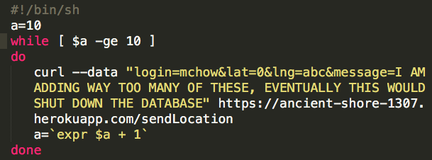
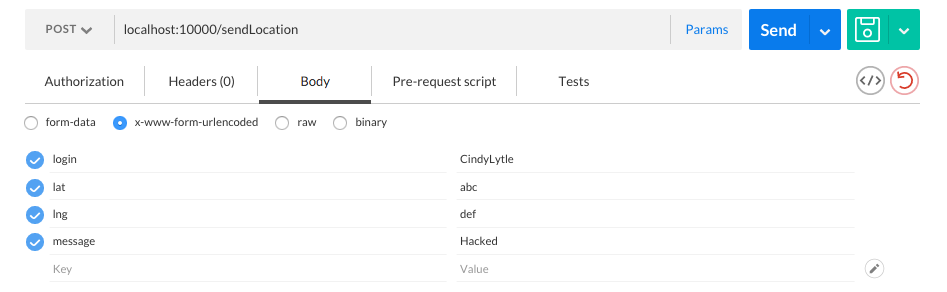
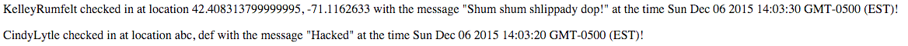
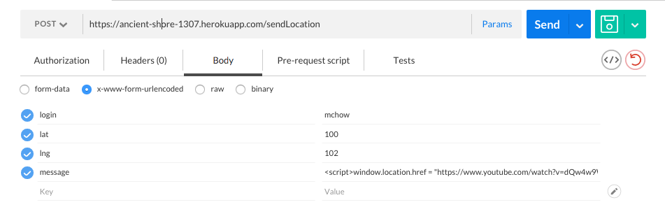
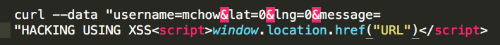

This assessment tests the security of the Comp20 asignments Mapchat and Mapchat Server, specifically those made by Ben Pall. Mapchat is a web aplication which uses user's login, location and a message, chosen by the user, to plot the user as a point on a map using the Google Maps API. The user apears as a pin among the many other pins of all other users who have used the app. These pins, when clicke on display the login, message, and distance from the current user of the pin.
Testing was carried out in a black box method, without viewing the original code. This had the exeption that after a short time the database was too compromised for the defaced website to be functional. At this time the server and website were deployed localy useing the original code so that testing could continue and the database could be cleared.
All of the issues found stemed from one key principle which was not taken into acount durring lecture: You Never Ever Trust User Input. In all cases the data entered was either manipulated or amplified in unantisipated way such that the database took on incorrect data or in one case far too much data.
1. Overuse of Database Insertions
Affects the Post "/sendLocation"
Security Risk: High
This flaw could shut down the server, or charge the credit card associated with the account if enough data was added to mongo data base to overflow the amount that is alloted for free. Thus it could potentialy shut down the server, making entire system useless.
This attack was done by making a shell comand that repeatedly sent a curl request to the server. The command only sends ten curls, however it would be very easy to send any number of curl requests, eventually shutting down the server.

This issue if fairly easily fixable by using the .upsert() function instead of the .insert() function, so that each username is allowed no more than one checkin, and that checkin is simply updated.
2. Accepting Strings as Latitude and Longitude
Affects the Database
Security Risk: Low
This flaw does relitively little to the function of the server or the client, however it does allow the client to give the server, and thus the database bogus data. This does not crash or seriously effect the server, but it also does not place the clients marker at any location.
I exicuted this issue through the Google app Postman as follows:

This data was entered into the database dispite being impossible to plot onto a map as seen in the Get "/latest.json":

This issue can be fixed by simply checking if the data sent for the lattitude and longitude are numbers. This can be done by checking the data that is entered:
if (typeof login === 'string' && !isNaN(lat) && !isNaN(lng) && typeof msg === 'string'){
}else{
res.send({"error":"Whoops, something is wrong with your data!"});
}
3. Cross Site Scripting (XSS)
Affects: Get "/" API
Severity: High
This flaw puts map chat at serious risk. I was easily able to redirect the page on its opening to an entirely diffent website, thus making the site essentually useless, if not hazardus to it's users.
Data submited to the Post "/sendLocation" API is not checked for characters that allow for cross site scripting. Thus javascript and html could easily injected into the database through the message feild of a post. The next time that the Get "/" API is used, the client side will exicute the injected field. I exicuted this using the Google app Postman as follows:

However it could have also been done using the curl command:

The results were the same. The user was redirected to youtube where a video began playing:
This serious flaw incapacitated the website until the database was manually cleared of the entry.
This issue can be resolved by escaping user input prior to entering it into the database. simpy escaping the message with "\" before questionable charachters should be sufficent. For example:
for(int i=0; i < s.length(); i++){
if(s[i] == " < " or s[i] == " > " or s[i] == " ' " or s[i] == ' " '){
s = [s.slice(0, i), \, s.slice(i)].join();
}
}
Issues with Mapchat make it reasonably easy to make the site become non-functional. The recomendations above would solve some of the most simple problems with the site, however far more issues exist, including problems with a lack of the SOP due to CORS being used with the wild card. The easiest and most time efficent way to fix all of these issues would be to rewrite the entire server, with an eye to detail in terms of vulnerabilities.